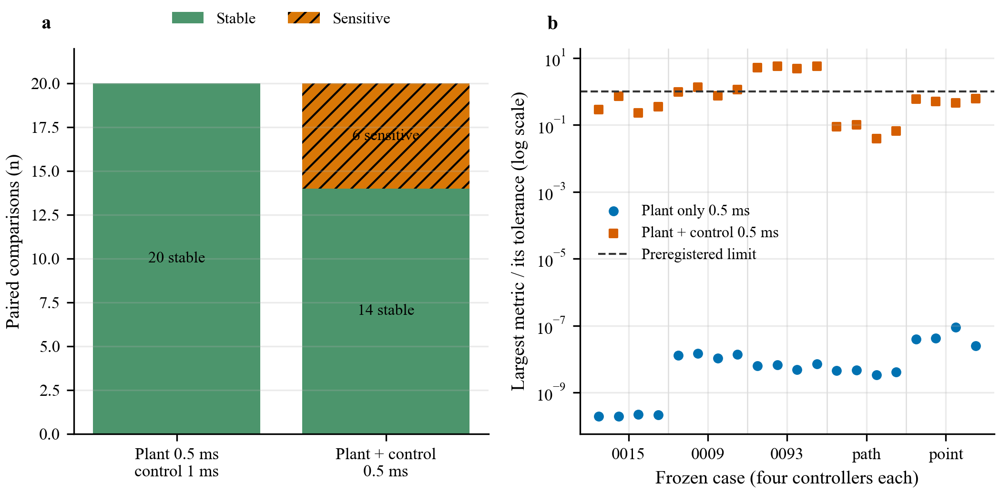
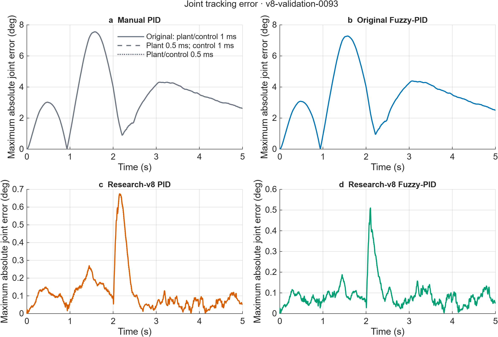
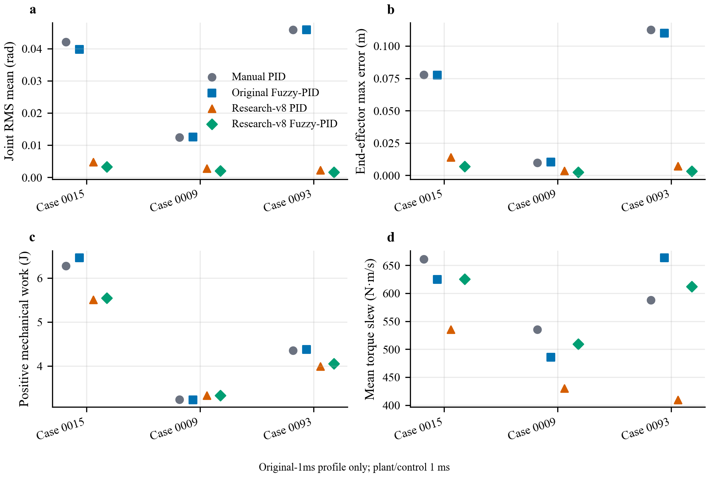
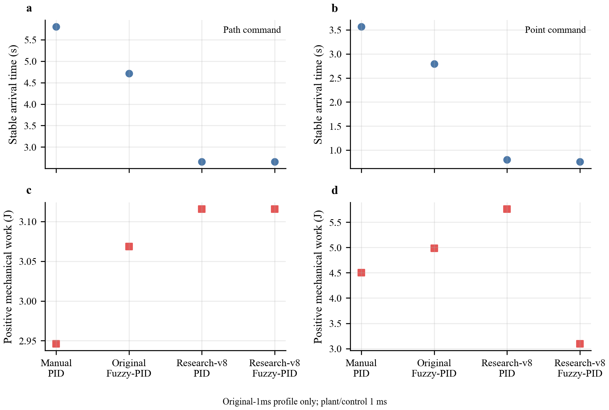
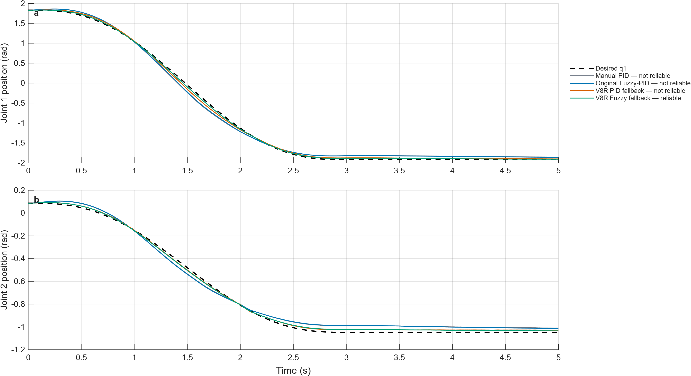
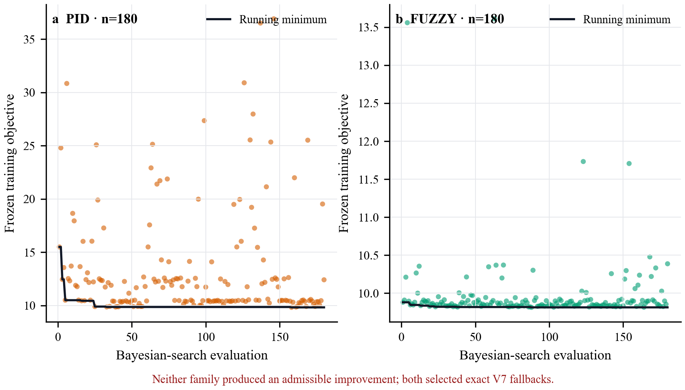

Nonlinear 2-DOF dynamics
MATLAB, Simulink, and Simscape Multibody models include configuration-dependent inertia, gravity, friction, payload, joint limits, and torque saturation.
Independent research / 2026–present
How much of a successful robot trajectory survives a change in the simulation clock? I built a torque-limited, nonlinear two-link manipulation framework to study tracking, reliability, and the limits of its numerical evidence.
Supervised by Dr. Liangcai Tan · Archimedes Controls Corp. · Remote
First-author manuscript in preparation · Simulation study
Paired outcomes
83.5–96.4% lower joint RMS tracking error. Against the initial manually tuned PID on the same 1 ms simulation grid, the research Fuzzy-PID reduced error by 92.1% in the nominal case, 83.5% with noise and disturbance, and 96.4% in the long-travel case.
78.7% shorter stable-arrival time; 31.3% less positive mechanical work. In one matched endpoint-only task, the research Fuzzy-PID reached the target in 0.760 s versus 3.565 s and recorded 3.094 J versus 4.502 J for the manual PID baseline.
These are comparisons on selected simulation cases, not an overall success-rate estimate. The endpoint case also had a higher squared-torque integral, so lower positive work does not establish lower electrical energy or an improvement on every actuation metric.
The framework
MATLAB, Simulink, and Simscape Multibody models include configuration-dependent inertia, gravity, friction, payload, joint limits, and torque saturation.
Torque-aware PID and Mamdani Fuzzy-PID track retimed joint and Cartesian references with inverse-dynamics feedforward, filtering, and anti-windup.
Earlier phases evaluated bounded candidate controllers against tracking and actuator criteria. The latest numerical study keeps four controllers fixed; it does not tune or select a new one.
Separate studies vary payload, robot configuration, model parameters, disturbance, sensing noise, and torque availability. The latest study specifically probes numerical time-step and feedback-period sensitivity.
Selected evidence
Every graphic below comes from the recorded simulation pipeline. The latest numerical-study figures are kept separate from earlier tuning and tracking examples.






Interpretation
The latest study selected five cases before inspecting their outcomes and replayed four fixed controllers at three time profiles: original 1 ms, plant-only 0.5 ms, and coupled plant-and-controller 0.5 ms. All 60 runs and all 40 refinement comparisons completed. The plant-only comparison was stable in every selected pair; the six sensitive coupled pairs identify a feedback-sampling question for follow-up.
This is a local numerical diagnostic, not a new controller-performance ranking. This study performed no optimization, admitted no new controller, opened no confirmation set, and does not establish physical-robot reliability. The manuscript is in preparation.
Research conversation
I’m interested in MS and PhD research opportunities in robotics and AI.
Zhenghao@connect.hku.hkBased in Hong Kong
Computer Engineering · HKU